Lecture 1: Blockchains and Crypto Markets as Data
Daniel Traian PELE
Bucharest University of Economic Studies
IDA Institute Digital Assets
Blockchain Research Center
Master Blockchain for Business (MBB), FABIZ
23 November 2026
Lecture 1: Blockchains and Crypto Markets as Data
Lecture 1: Blockchains and Crypto Markets as Data
Daniel Traian PELE
Bucharest University of Economic Studies
IDA Institute Digital Assets
Blockchain Research Center
Master Blockchain for Business (MBB), FABIZ
23 November 2026
“The public can see that someone is sending an amount to someone else, but without information linking the transaction to anyone. This is similar to the level of information released by stock exchanges, where the time and size of individual trades, the ‘tape’, is made public, but without telling who the parties were.” — Nakamoto (2008)Statue of Satoshi Nakamoto, Budapest. Photo: Fekist (2021); CC BY-SA 4.0; Wikimedia Commons
The lecture starts from a manager's question: what can be learned from the data that blockchain applications produce? On public blockchains such as Bitcoin and Ethereum, every on-chain transfer and every fee is public, carries the time of its block and can be downloaded at no cost. Other information stays hidden: the owners behind the addresses, the trades that happen inside an exchange, and everything recorded on permissioned or privacy-preserving chains.
Each section of the lecture answers one question. What does a blockchain record, and what stays off the chain? Where do the data come from, and can they be trusted? How large and how concentrated is the market of coins, stablecoins, decentralised finance (DeFi) and exchange-traded funds (ETFs)? How much is the chain used, and does its value follow its use? How fast do these series grow, and can the growth be extrapolated? Each section ends with its answer, and the summary puts the five answers together. Lecture 2 then turns the same prices into returns and studies their statistical behaviour.
In brief
The core reading is the survey by Härdle, Harvey & Reule (2020), Understanding Cryptocurrencies, which covers the technology, the markets and the econometrics of crypto assets. Three video units of the Quantinar course Blockchain Analytics accompany the lecture. The data are of two kinds: daily on-chain series of Bitcoin and Ethereum from November 2014 to October 2025, from the Blockchain Research Center (BRC), available in the course repository, and market data on market value, stablecoins, DeFi and ETFs up to 18 September 2026, from DefiLlama and from the data vendor EOD Historical Data (EODHD). The notebook of Lecture 1 in the course repository computes every number and chart of the lecture and runs in Google Colab.
In brief
The idea of money that is not issued by a state is older than the technology. In 1976 Friedrich Hayek, who had received the Nobel Memorial Prize two years earlier, published Denationalisation of Money (Hayek (1976)). He proposed to end the government monopoly of money and to let private issuers compete: each issuer would offer its own currency, and users would keep the one whose purchasing power stays stable. Competition, not law, would discipline the issuers.
The technical building blocks came later. Chaum (1983) showed how blind signatures allow payments that the bank cannot trace. In 1997 Adam Back proposed Hashcash, a proof of work designed against e-mail spam (Back (2002)). Dai (1998) described b-money, a ledger of payments kept by its users. In 2008 Nakamoto (2008) combined these elements into a money with no issuer at all.
Today's stablecoins are private monies that compete on the stability of their value. In that respect they are closer to Hayek's proposal than Bitcoin, whose supply follows a fixed rule and whose price is not tied to anything.
In brief
On 31 October 2008 Nakamoto (2008) proposed "a peer-to-peer electronic cash system", in which users pay each other directly without a bank in the middle. The problem the design solves is double spending, paying twice with the same digital coin, without a central party that keeps the accounts. The first block followed on 3 January 2009 and the first exchange trades in 2010. In 2015 Ethereum added smart contracts, programs that run on the blockchain (Buterin, 2014). Stablecoins, tokenised funds, DeFi and exchange-traded funds are built on these two ideas.
In brief
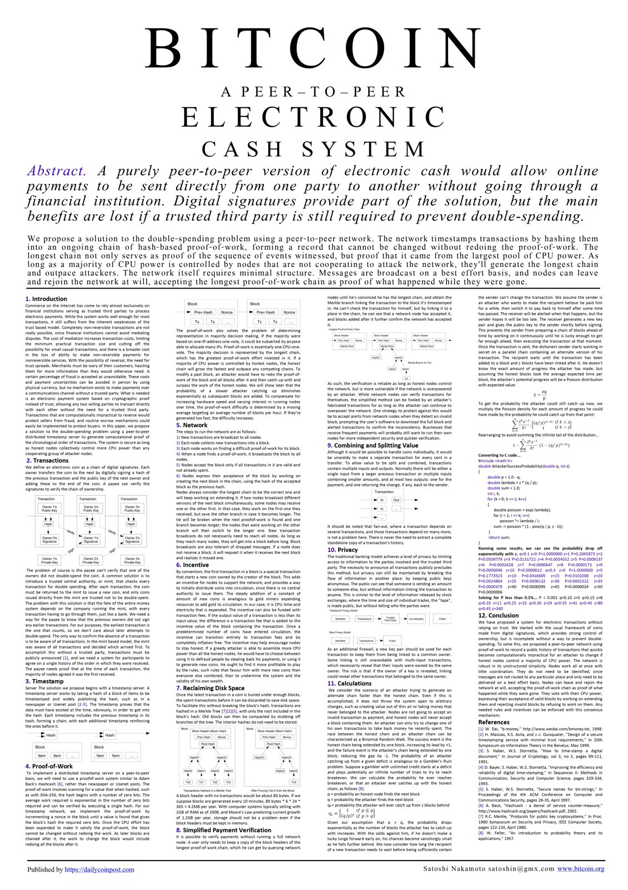
The Bitcoin white paper, 2008 Text: Satoshi Nakamoto (2008); poster: DailyCoinPost (2018); CC0; Wikimedia CommonsThe public can see that someone is sending an amount to someone else, but without information linking the transaction to anyone. This is similar to the level of information released by stock exchanges, where the time and size of individual trades, the “tape”, is made public, but without telling who the parties were.
A public blockchain is a database that anyone can download. Every transfer of coins, every fee and every call to a smart contract is written into a block, and every block carries a time stamp. For an analyst this is unusual: in most markets the records of payments and positions are held by banks, brokers and exchanges, and only summaries are published. On Bitcoin and Ethereum the raw record itself is public, from the first block onwards.
This does not mean that everything is visible. The owners behind the addresses are not recorded, most trading happens inside exchanges and never reaches the chain, and the reserves of a stablecoin issuer sit in a bank account, not on the ledger. The lecture therefore asks a practical question: what can a manager learn from the data that blockchain applications produce, and what must be checked before these data support a conclusion?
The answer is built in five steps. The lecture first describes what a block records and which quantities, such as the difficulty and the coin supply, follow from the protocol. It then lists the data sources and the checks a data set must pass before it is used. With checked data it measures the size and concentration of the market, the growth of stablecoins and decentralised finance (DeFi), and the arrival of exchange-traded funds (ETFs); it reads four daily on-chain series of Bitcoin and Ethereum from November 2014 to October 2025; and it finally measures growth on a log scale, with a trend regression that is tested one year after the end of the sample.
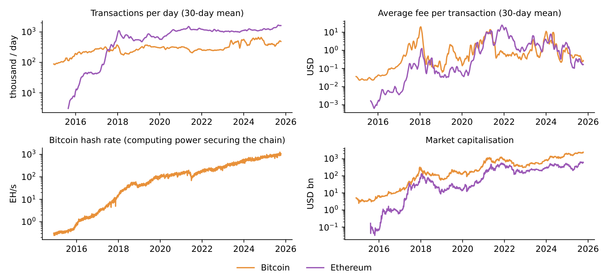
The Appendix holds optional worked examples and checks.
A blockchain is usually described through its cryptography. For data analysis the relevant question is different: which quantities does each part of the system leave in the public record, and which quantities follow from the protocol rules without any estimation? The section answers it for the ledger, the block, the consensus rule, smart contracts and layer-2 networks, and works out two quantities exactly: the hash rate implied by the difficulty and the supply of bitcoin.
A hash is a fixed-length number computed from any piece of data by a hash function; Bitcoin uses SHA-256, whose output has 256 bits. Any change in the data gives a different hash, and the data cannot be recovered from the hash. The Quantinar unit Blockchain Technology – An Introduction (Härdle and Lin), in its section on cryptography, explains hash functions, digital signatures and Merkle trees in detail. Each piece of a blockchain is read here as a source of data.
The ledger of a public blockchain is one list of transactions, copied on thousands of computers called nodes. Because every node holds the same list, anybody can read it. Records outside this list are not part of it: permissioned chains, privacy mechanisms and trades settled off the chain.
A block is a batch of transactions with a time stamp. Each block contains the hash of the previous block, a short fingerprint of its content. Changing an old transaction would change that block's hash and break the link to every later block, so tampering is visible; this is what "tamper-evident" means. The time stamp of a block records when a transfer entered the ledger, which can differ from the moment the two parties agreed on the exchange.
In brief
The consensus rule decides who adds the next block. Under proof of work, used by Bitcoin, miners compete with computing power, and the difficulty of the puzzle and the network's hash rate appear in the data. Under proof of stake, used by Ethereum since 15 September 2022, validators lock coins as a deposit (the stake), which also appears in the data; according to ethereum.org: The Merge, the switch cut Ethereum's energy use by more than 99.9%. A smart contract is a program stored on the chain, and its calls, such as deposits, loans and swaps, are on-chain records. A layer-2 network bundles many transactions and settles them on Ethereum in one batch, so only the settlement reaches the main chain.
In brief
The ledger records addresses, not names, and an address is controlled by a key. A private key is a secret number, 256 bits long for Bitcoin, that signs transactions. Whoever knows it can spend the coins, and there is no password reset. The public key is computed from the private key, and the address is a hash of the public key; both computations run in one direction only, so the address reveals nothing about the key. The network checks each signature with the public key and never sees the private key.
A wallet is software or a device that stores the keys. The coins themselves stay on the chain: a wallet holds the right to move them, not the coins.
Custody is the question of who holds the keys. In self-custody the owner holds them, and a lost key means lost coins. In custodial holding an exchange or a bank holds them, and the client has a claim on the custodian, not coins on the chain. The collapse of the exchange FTX in November 2022 showed the risk: the clients of a bankrupt exchange could not withdraw. For a firm this is a decision about operational risk and counterparty risk.
Custody also matters for reading the data. One address of an exchange holds the coins of many clients, so the number of addresses is not the number of users.
In brief
In proof of work a block is valid only if the hash of its header, combined with a number chosen by the miner (the nonce), falls below a target \(T\). The hash function \(H\) behaves like a draw from the integers \(0, \dots, 2^{256}-1\), so one try succeeds with probability \(p = T/2^{256}\). The number of tries until the first success has a geometric distribution with mean \(1/p = 2^{256}/T\). The protocol publishes this target in a scaled form, the difficulty \(D = T_{\max}/T\), where \(T_{\max} \approx 2^{224}\) is the largest allowed target; the expected number of tries per block is then \(D \cdot 2^{32}\).
Bitcoin aims at one block every 600 seconds on average. Dividing the expected number of tries by 600 gives the hashes the network must compute per second, the hash rate:
On 8 October 2025 the published difficulty was \(D = 1.508 \times 10^{14}\). With \(2^{32} \approx 4.295 \times 10^{9}\), formula (1.1) gives \(1.08 \times 10^{21}\) hashes per second, that is 1,080 exahashes per second (EH/s), where one exahash is \(10^{18}\) hashes. The computing power behind the network is therefore measured from one public number, without surveying the miners.
The difficulty is not fixed. Every 2,016 blocks, which take 20,160 minutes at the target pace, the protocol multiplies the difficulty by 20,160 divided by the minutes the last 2,016 blocks actually took. When miners add machines, blocks arrive faster than planned and the difficulty rises at the next adjustment; when they switch machines off, it falls. The Appendix compares formula (1.1) with the hash rate reported by the data provider.
In brief
Daily on-chain series record the mean time between Bitcoin blocks and the difficulty in force. The left panel shows the block time as a 30-day mean, from November 2014 to 8 October 2025, against the protocol target of 10 minutes (dashed red line). The right panel is a histogram of the 291 difficulty adjustments found in the data: each bar counts the epochs of 2,016 blocks whose difficulty changed by a given percentage at the start of the epoch.
Over the whole sample the mean time between blocks was 9.86 minutes, which corresponds to 146.1 blocks a day instead of the 144 of the target; the daily mean was below 10 minutes on 59% of the days. The reason is visible in the right panel. The median adjustment is +3.0% and 74% of the adjustments are upward: the hash rate grew almost continuously, so blocks arrived early within each epoch and the next adjustment raised the difficulty. Because the protocol corrects only after 2,016 blocks, it is always one step behind a growing network.
The largest fall of the difficulty, −27.9%, came at the epoch starting on 4 July 2021, after China's ban on mining switched off a large part of the hash rate: on the Cambridge Bitcoin Electricity Consumption Index (CBECI) mining map, China's share of the hash rate falls to zero in July 2021. With fewer machines and an unchanged difficulty, blocks slowed down: the 30-day mean block time reached 13.4 minutes that month, the highest value in the sample, until the adjustment restored the pace.
In brief
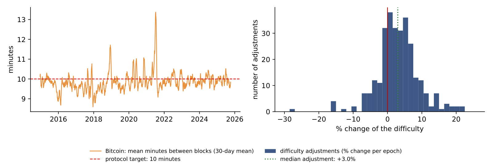
New bitcoins enter circulation as a reward to the miner of each block, the block subsidy. The subsidy depends only on the block height \(h\), the number of blocks since the first one: it started at 50 BTC and is halved every 210,000 blocks, roughly every four years. The subsidies so far have been 50, 25, 12.5, 6.25 and, since April 2024, 3.125 BTC. Written as a formula, \(s(h) = 50 \cdot 2^{-\lfloor h/210\,000 \rfloor}\) BTC, where \(\lfloor \cdot \rfloor\) rounds down to an integer.
Each period of 210,000 blocks adds half as many coins as the previous one, so the total supply is a geometric series:
The supply growth rate measures how fast the stock of coins grows. After the 2024 halving, 144 blocks a day add \(3.125 \times 144 \times 365 = 164{,}250\) BTC a year. With \(S_t = 20.09\) million BTC in circulation on 18 September 2026, the annual growth rate is \(164{,}250 / 20.09 \text{ million} = 0.82\%\). This is the growth of the coin stock, not consumer-price inflation, so it cannot be compared with a central bank's 2% inflation target.
Because the supply path is known in advance, it cannot explain price surprises: a halving is announced years before it happens, and market participants can take it into account.
In brief
3.61%. Four halvings divide the subsidy by 2⁴ = 16, from 53.5 to 3.3 USD million a day, while fees stay at 0.13 USD million a day; the fee share roughly doubles with each halving (0.47%, 0.93%, 1.84%, 3.61%) as long as fees are small. Even then fees do not carry the network: revenue falls from 53.7 to 3.4 USD million a day. In the 30 days to 17 January 2018, the highest fee share of the sample (17.9%), the same four halvings would give 78%.
Miners are paid in two ways: the block subsidy, newly created bitcoins, and the fees attached to the transactions they include. Both can be measured from public data. Per day, the subsidy in USD is the number of blocks times the subsidy per block times the Bitcoin price, and the fees in USD are the number of transactions times the average fee. The number of blocks per day follows from the mean block time (\(1\,440\) minutes divided by the mean block time), the subsidy follows the halving dates of 9 July 2016, 11 May 2020 and 20 April 2024, and the price is the EODHD daily close.
The left panel shows the two parts of miner revenue as 30-day means on a log scale; the right panel shows fees as a share of revenue. Fees were 10.4% of revenue in 2017, 4.0% in 2023 and 0.4% in 2025; the highest month was December 2017, at 15.7%, when blocks were full and users competed for space. In the 30 days to 8 October 2025 fees were only 0.23% of revenue: miners earned 53.7 million USD a day, almost all of it from the subsidy.
This matters for the security of the network. The hash rate that protects Bitcoin is paid for by miner revenue, often called the security budget. Each halving cuts the subsidy in bitcoins by half, so the budget in USD holds up only if the price rises; once the subsidy becomes small, fees will have to carry the network.
In brief
Proof of work is paid for in electricity. The Cambridge Bitcoin Electricity Consumption Index (CBECI) estimates the annualised electricity use of the network from the hash rate and the efficiency of mining machines. Because nobody knows which machines are running, the index reports a range. The lower bound assumes that all miners use the most efficient machine, the upper bound that they use the least efficient machines that are still profitable, and the best guess lies between them.
On 22 November 2026 the best guess was 174.6 TWh a year, between 87.9 and 283.8 TWh: the upper bound is more than three times the lower one, so a single figure quoted without its range is misleading. The yearly mean of the best guess rose from 68.6 TWh in 2020 to 104.1 in 2021 and 206.6 in 2025; in 2026 to date it is 169.5. The fall of mid-2021 is visible in the chart: 67.2 TWh in July against 122.8 in May, after the mining ban in China.
Electricity is the main cost of miners, and it is paid from the revenue of the previous slide. When the price of Bitcoin or the subsidy falls, the least efficient machines are switched off, and the hash rate and the electricity use fall with them.
In brief
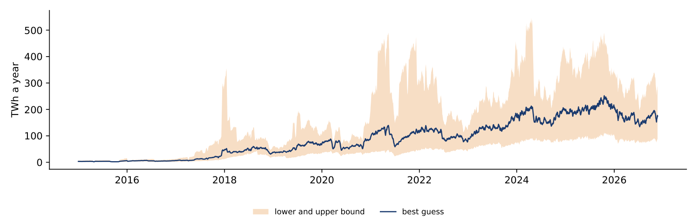
The numbers so far describe Bitcoin. Ethereum followed the same design until 15 September 2022, the day of the Merge (ethereum.org: The Merge), when it replaced proof of work with proof of stake. Validators lock at least 32 ETH as a stake and take turns to propose and confirm blocks; a validator that cheats loses a part of its stake. There is no mining and almost no electricity cost. On 23 November 2026 the beacon chain, the ledger of the validators, showed 0.79 million validators with 44.7 million ETH, about 37% of the supply.
The change is visible in the data. New Ether per day fell from 14,703 in the year before the Merge to 1,856 in the year after, 87% less, because validators are paid much less than miners were. The supply grew by 3.45% a year in the two years before the Merge and by 0.27% a year since: 120.52 million ETH at the Merge, 121.72 million on 23 May 2026, the last day of the Coin Metrics series.
A second rule works in the opposite direction. Since August 2021 a part of every transaction fee is destroyed, so on days with high fees more Ether is destroyed than created; the supply fell to 120.07 million in April 2024. Unlike Bitcoin, Ether has no cap and no fixed schedule: its supply depends on the amount staked and on the fees paid.
In brief
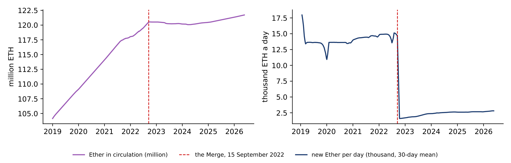
The table divides the information about a public blockchain into two groups. On-chain, and so public, are every transfer with its sender address, receiver address, amount and time; the fees, block sizes and block times; the supply of each coin and token; the calls to smart contracts; and the mining or staking power. Off-chain, and so private or only partly known, are the identity of the owner of an address, the trades inside an exchange (which keeps its own internal ledger), the reserves that back a stablecoin, the prices on exchanges, where each venue has its own, and the business purpose of a transaction.
Two consequences follow for analysis. First, addresses are pseudonymous: an address is not an entity such as an exchange or a fund, and an entity is not the economic owner, such as the exchange's client. Analytics firms group addresses into entities with clustering rules, and these groupings contain errors. Second, most trading takes place on centralised exchanges, off the chain. On-chain data therefore show settlement, the final transfer of coins, but not all of the trading behind it.
In brief
| On-chain (public blockchains) | Off-chain (private or partial) |
|---|---|
| every transfer: sender address, receiver address, amount, time | who owns an address: names are not recorded |
| fees paid, block size, block time | trades inside an exchange (one internal ledger) |
| supply of each coin and token | reserves backing a stablecoin |
| smart-contract calls: deposits, loans, swaps | prices on exchanges (each venue has its own) |
| mining or staking power (hash rate, stake) | the business purpose of a transaction |
Section summary
The ledger provides a complete and public record of transfers, fees, supply and computing power. Some quantities, such as the hash rate and the supply, follow from protocol rules and published numbers. Ownership, exchange trading and stablecoin reserves stay off the chain and must come from other sources. This answers the first question: the chain records transfers, fees and supply, not owners or trades inside exchanges.
The numbers in this lecture come from public sources that differ in what they measure and how they compute it. The section comes before any analysis for that reason. It reviews the sources of on-chain data and of market data, describes four problems that are typical of crypto data and gives a checklist to find them.
On-chain data reach the analyst through five kinds of source. Block explorers such as Etherscan for Ethereum and mempool.space for Bitcoin show single transactions, addresses, contracts and blocks; they are used to check one transaction or one wallet. On-chain data providers turn the chain into daily series per coin, such as transactions, fees, hash rate and supply; the lectures use the series of the Blockchain Research Center (BRC) for on-chain activity and of Coin Metrics for the supply of coins.
Query platforms such as Dune store decoded blockchain tables that can be queried in SQL, which allows metrics that no provider publishes. Dashboards such as DefiLlama follow the supply of stablecoins, the total value locked (TVL) in DeFi and the fees of each protocol. For mining, the Cambridge Bitcoin Electricity Consumption Index (CBECI) estimates the electricity use and the geography of Bitcoin mining.
Every on-chain series can in principle be rebuilt from the chain itself. A provider saves that work, and in doing so adds its own definitions, for example of what counts as a transaction or as circulating supply.
In brief
| Type of source | Examples | What it gives | Use in this course |
|---|---|---|---|
| Block explorers | Etherscan, mempool.space | single transactions, addresses, contracts, blocks | check one transaction or one wallet |
| On-chain data providers | Blockchain Research Center (BRC), Coin Metrics | daily series per coin: transactions, fees, hash rate, supply | on-chain activity (L1, L2), coin supply (L1, L3) |
| Query platforms | Dune | Structured Query Language (SQL) queries on decoded blockchain tables | custom on-chain metrics |
| DeFi and stablecoin dashboards | DefiLlama | stablecoin supply, total value locked (TVL) in DeFi, fees by protocol | stablecoins (L5, L6), DeFi |
| Mining | Cambridge Bitcoin Electricity Consumption Index (CBECI) | electricity use and geography of Bitcoin mining | the energy cost of proof of work |
Prices do not come from the chain; they come from markets. Exchanges such as Bitstamp, Kraken, Coinbase and Binance publish the trades, order books and daily prices of their own venue; this lecture uses their daily closes to compare exchanges. Aggregators such as CoinGecko and CoinMarketCap average prices, volumes and market values over many exchanges and are the usual first look at a coin. Data vendors sell cleaned histories: EODHD provides the daily and hourly prices used in the lectures, and Tardis.dev provides trades and order books from about 70 exchanges. An index such as CRIX summarises the whole market in one value-weighted series; Lecture 3 builds one.
The series of this lecture come from sources of these kinds. Recent daily data are free, while long histories and tick data are usually paid. Sources differ in the exchanges they cover, in the time at which the daily close is taken and in their definitions, so the same metric can differ from one provider to another. Providers also revise and relabel their series, so a dated copy of every series analysed should be kept; without it, results cannot be reproduced.
In brief
| Type of source | Examples | What it gives | Use in this course |
|---|---|---|---|
| Exchanges | Bitstamp, Kraken, Coinbase, Binance | trades, order books and daily prices of one venue | the daily close across exchanges (L1) |
| Aggregators | CoinGecko, CoinMarketCap | prices, volumes and market value averaged over exchanges | whole-market value and exchange volumes (L1); the project |
| Data vendors | EODHD, Tardis.dev | cleaned histories: daily and hourly prices; trades and order books from about 70 exchanges | returns, volatility, correlations (L2, L4) |
| Indices | CRIX Trimborn & Härdle (2018) | one value-weighted series for the whole market | crypto indices (L3) |
Crypto series reach the analyst through data providers that scrape blockchains and exchanges, merge sources and label the results. Four problems are common, and the data of this lecture and of the literature give an example of each.
A series that ends early has a last observation well before the others. The social-media counts in the lecture data stop on 14 March 2023; the last non-missing date of every series shows this, and any analysis that uses the series must end its sample there.
Missing values may be scattered or may grow until a series dies. The XRP transaction counts have 32% missing values since 2020 and none after November 2023; the share of missing values per year shows the pattern. A coin with such a gap is dropped from that series, while its other series, for example its market value, can still be used.
Several prices for one asset exist at the same moment, because a coin trades on hundreds of exchanges and each has its own price. Two providers that average different exchanges publish different series; comparing them shows the size of the gap, and one provider is then kept for the whole analysis. On three large exchanges the gap at the close is about 1 bp, as the next slide shows.
A close by convention follows from a market that never closes. The "daily close" of a coin is whatever time the provider chose, usually midnight UTC, while a stock index closes when its exchange does. Another closing hour changes the daily return of Bitcoin by 67 bp in the median. The provider's definition says which hour is used, and calendars must be aligned before returns of the two are compared.
None of these problems stops a program from running. Each biases a result without any warning: a mean, a correlation or a growth rate computed on the unchecked data is simply wrong.
In brief
| Problem | Example | How to detect it | What to do |
|---|---|---|---|
| Series that ends early | social-media counts stop on 14 March 2023 | last non-missing date | end the sample there |
| Missing values | XRP transactions: 32% missing since 2020, none after November 2023 | share missing per year | drop the coin from that series |
| Several prices for one asset | three large exchanges differ by about 1 bp at the close (next slide) | compare two providers | keep one provider throughout |
| A close by convention | the market never closes; another closing hour changes the daily return by 67 bp (median) | read the provider's definition | align calendars before comparing returns |
A daily price of Bitcoin rests on two conventions: the exchange on which it is observed and the hour at which the day closes. The chart measures both on the data of the course.
The left panel shows the gap between the daily closes of three exchanges, Kraken and Coinbase against Bitstamp, in basis points (bp, one hundredth of a percent), from 3 December 2024 to 31 October 2026. The median absolute gap is about 1 bp and the largest 14.7 bp: on large exchanges that trade Bitcoin against the US dollar, the closes agree. This was not always so. Makarov & Schoar (2020) study 34 exchanges in 19 countries in 2017–2018 and find large and persistent price gaps between countries such as Korea, Japan and the United States, where capital controls blocked arbitrage, and much smaller gaps within a country.
The right panel takes the second convention. The market never closes, so a "daily close" is whatever hour the provider chose, usually midnight UTC. For every hour of the day, the Bitcoin return is computed between that hour on consecutive trading days and correlated with the S&P 500 return, over 2021–2026. With a close after the New York session the correlation is 0.39; with a close at 00:00 UTC, before the session, it is 0.03, because the hours in which the two markets move together fall into the next day. Taking the close at 16:00 New York time instead of midnight UTC changes the daily return of Bitcoin by 67 bp in the median.
The closing hour therefore matters far more than the exchange. Before the returns of a coin are compared with those of a stock index, the two calendars must be aligned.
In brief
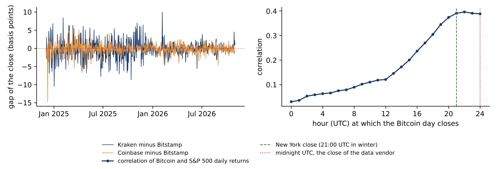
The checklist turns these problems into routine steps. The calendar check asks whether there is one row per day, with no duplicate dates and no gaps; the daily Bitcoin series from 28 November 2014 to 8 October 2025, for example, has 3,968 days and no gaps. The coverage check records the first and last valid date of every series, and the missing-values check computes the share of missing values per series and per year. The units check asks whether a series is in USD or in coins, in billions or in units, per day or cumulative.
The outlier check plots every series on a log scale, where a jump by a factor of 100 stands out; such jumps are errors in the data, not news. The duplicates check looks for two identical series or a series copied into the wrong column. The source and definition check records which exchanges enter a price, at which time the daily close is taken and which set of addresses a measure covers. The coverage, missing-values and source-and-definition checks detect the four typical problems of the previous slides.
In brief
The checklist asks for the coverage and the share of missing values of every series. The chart does both at once for the daily transaction counts: each row is a coin, each column a calendar year, and the number in a cell is the percentage of days of that year with no value (cells below 0.5% are left blank). The tickers are ETC for Ethereum Classic, BCH for Bitcoin Cash, ZEC for Zcash, BSV for Bitcoin SV and XMR for Monero. The first year starts on 28 November 2014 and the last ends on 8 October 2025.
Most gaps lie before the first value of a coin: Bitcoin Cash starts on 1 August 2017 and Bitcoin SV on 15 November 2018, when these chains split from Bitcoin. Once a series has started, it is almost complete: the share of missing days after the first value is between 0 and 0.2% for every coin except XRP. The XRP series misses 17.2% of the days after its start, with 9% missing in 2023 and no value at all in 2024 and 2025.
The consequence for an analysis is concrete. All 11 coins are observed together only from 15 November 2018 to 27 November 2023. A study that needs every coin on every day, a balanced panel, therefore has five years of data, not eleven; a study over the full period has to handle coins that enter and leave the sample.
In brief
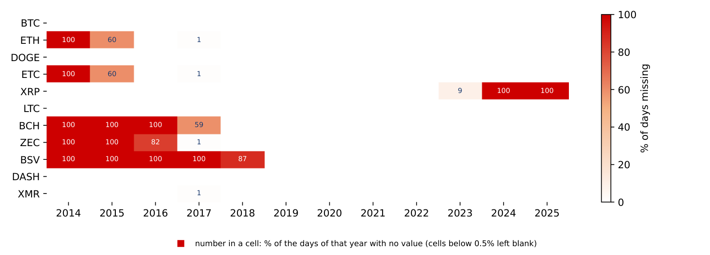
Section summary
Free public sources cover most of what an analyst needs, but each has its own coverage and definitions. Series that end early, growing gaps, several prices for one asset and a close set by convention bias results without any warning; simple checks before the analysis find them. This answers the second question: the data are public and free, and usable only after the checklist. The next section applies checked data to the first question about the market: how large it is.
The section measures the size and structure of the crypto market with a few standard tools: market value, value shares, a concentration index and a market index. It then looks at three applications that brought crypto assets closer to traditional finance: stablecoins, decentralised finance and spot exchange-traded funds.
A coin is the native asset of a blockchain, such as BTC on Bitcoin and ETH on Ethereum; it pays the transaction fees, and the protocol can fix its supply, as with Bitcoin's cap of 21 million. A token is an asset issued by a smart contract on an existing chain: stablecoins such as USDT and USDC, governance tokens, and tokenised funds and bonds. Decentralised finance (DeFi) runs lending and trading through smart contracts, without a bank or broker. Each of these is an application of the blockchain, and each leaves a data trail on the chain.
In brief
Crypto-assets differ in what their holder obtains, and the table sorts them by that criterion. Native coins such as BTC and ETH are the asset of a blockchain: they pay its fees and reward its miners or validators. Stablecoins are tokens pegged to a stable asset, the subject of Lectures 5 and 6. Utility tokens give access to a service of a network, for example storage on Filecoin or data feeds on Chainlink. Governance tokens, such as those of Uniswap and Aave, give votes on the rules of a protocol. Tokenised securities are shares, bonds or fund units recorded on a chain. Non-fungible tokens (NFTs) each represent one unique item, such as a work of art, a collectible or a ticket; Lecture 7 returns to them.
The last column gives the treatment under the European Markets in Crypto-Assets Regulation (MiCA, Regulation (EU) 2023/1114). MiCA has three categories. An e-money token is pegged to one official currency, as USDT and USDC are to the US dollar. An asset-referenced token is pegged to other assets or to a basket, as a gold-backed token is. Everything else falls under other crypto-assets, which include native coins, utility tokens and governance tokens. Tokenised securities are financial instruments and follow the securities rules, and unique NFTs are outside MiCA.
The classes overlap. One token can pay fees, give votes and be held as an investment at the same time, so the class says what a token is for, not how its price behaves.
In brief
| Class | What the holder gets | Examples | EU rules (MiCA) |
|---|---|---|---|
| Native coins | the asset of a blockchain: pays fees, rewards miners or validators | BTC, ETH | other crypto-assets |
| Stablecoins | a token pegged to a stable asset (Lectures 5 and 6) | USDT, USDC; PAX Gold | e-money tokens; asset-referenced tokens |
| Utility tokens | access to a service of a network | Filecoin (storage), Chainlink (data feeds) | other crypto-assets |
| Governance tokens | votes on the rules of a protocol | Uniswap (UNI), Aave (AAVE) | other crypto-assets |
| Tokenised securities | a share, bond or fund unit recorded on a chain | tokenised money-market funds and bonds | financial instruments, outside MiCA |
| Non-fungible tokens (NFTs) | one unique item: art, a collectible, a ticket (Lecture 7) | CryptoPunks | unique NFTs are outside MiCA |
Besides the classes of the previous slide, the market uses a set of labels that every report and data source takes for granted. An altcoin is any coin other than Bitcoin. A payment coin, such as Bitcoin, Litecoin or Bitcoin Cash, is designed mainly for payments. A platform coin, also called a layer-1 coin, is the native coin of a chain that runs smart contracts, such as Ether, Solana or Cardano; a layer-2 token belongs to a network that settles its transactions on Ethereum, such as Arbitrum or Optimism.
A privacy coin, such as Monero or Zcash, hides the sender, the receiver or the amount of a transfer, so the transparency described in this lecture does not hold for it. A memecoin, such as Dogecoin, is carried by attention and has no stated use. An exchange token, such as BNB, is issued by an exchange and gives, for example, discounts on its fees. A wrapped token stands for a coin of another chain: Wrapped Bitcoin is a token on Ethereum that represents bitcoin.
These are labels of market practice, not legal categories, and one coin can carry several of them: Ether is both an altcoin and a platform coin. The on-chain files used in this lecture cover Bitcoin and ten altcoins: ETH, XRP, BCH, BSV, LTC, XMR, DASH, ETC, ZEC and DOGE.
In brief
| Label | Meaning | Examples |
|---|---|---|
| Altcoin | any coin other than Bitcoin | ETH, LTC, DOGE |
| Payment coin | designed mainly for payments | BTC, LTC, Bitcoin Cash (BCH) |
| Platform coin (layer 1) | the native coin of a chain that runs smart contracts | ETH, Solana (SOL), Cardano (ADA) |
| Layer-2 token | the token of a network that settles on Ethereum | Arbitrum (ARB), Optimism (OP) |
| Privacy coin | hides the sender, the receiver or the amount | Monero (XMR), Zcash (ZEC) |
| Memecoin | carried by attention, with no stated use | Dogecoin (DOGE) |
| Exchange token | issued by an exchange, for example for fee discounts | BNB |
| Wrapped token | a token that stands for a coin of another chain | Wrapped Bitcoin (WBTC) on Ethereum |
1.42. The shares are 82.5% (Bitcoin), 16.2% (Ethereum), 0.7% (Dogecoin), 0.4% (Cardano) and 0.2% (Litecoin); the HHI, the sum of the squared shares, is 0.71, and 1/0.71 = 1.42. The basket has five coins, but its value behaves like that of 1.42 coins of equal size. 1/0.825 = 1.21 would count Bitcoin alone; the Ethereum share adds 0.162² = 0.026 to the HHI.
The market value of coin \(i\) on day \(t\) is its price in USD times the number of coins in circulation, \(M_{i,t} = P_{i,t} \times Q_{i,t}\). The chart stacks the market values of five coins with a public circulating supply: Bitcoin (BTC), Ether (ETH), Dogecoin (DOGE), Cardano (ADA) and Litecoin (LTC). These five are a selection, not the five largest coins of the market. The lower panel shows Bitcoin's share of the five-coin total.
Together, the five coins were worth 1,970 billion USD on 18 September 2026; their peak was 3,135 billion on 6 October 2025. Bitcoin alone was worth 1.63 trillion USD, 82.5% of the basket, and its share has moved between 55.8% and 88.5% since 2018. This is Bitcoin's share of the basket, not of the whole crypto market, which contains many more coins. For the whole market, CoinGecko reported 2.09 trillion USD in 21,291 coins on 23 November 2026, two months later and at lower prices, with Bitcoin at 58.9% and Ethereum at 10.0%.
The chart also shows what drives the market value. The number of coins changes slowly, so the large swings in the stacked areas come almost entirely from prices.
In brief
A single number for concentration is the Herfindahl–Hirschman index (HHI), the measure competition authorities use for market concentration. With \(w_i\) the value share of coin \(i\) and \(N\) the number of coins,
The index ranges from \(1/N\), when all shares are equal, to 1, when one coin holds everything. Its inverse, \(1/\mathrm{HHI}\), is the effective number of coins: the number of equal-sized coins that would give the same concentration.
The worked example uses shares of 82.5%, 15% and 2.5%. Squaring and adding gives \(0.681 + 0.023 + 0.001 = 0.70\), and the effective number is \(1/0.70 = 1.4\): these three coins are as concentrated as 1.4 coins of equal size. Squaring gives large shares much more weight than small ones, which is why the dominant coin decides the result.
For the five selected coins on 18 September 2026, the HHI is 0.71 and the effective number 1.42. The value describes this basket only. Adding coins lowers the HHI: with eleven coins in September 2025 it was 0.58, as shown in the Appendix.
In brief
It falls from 11.13% a year (Bitcoin alone) to 2.71% (top 2), 1.69% (top 3) and 0.90% (top 4). Bitcoin dominates the basket, but its share moved between 55.8% and 88.5% since 2018, so the Bitcoin-only index still departs from the five-coin index. The Akaike information criterion chooses k = 4. The tracking error measures the difference of the daily returns, not the volatility of the index: the five-coin index itself has a volatility of 65.7% a year.
A market index summarises many prices in one series. CRIX, the CRypto IndeX of Trimborn & Härdle (2018), is value-weighted: each coin enters with its market value, so large coins move the index more. The number of coins in the index is not fixed in advance but chosen by a statistical rule, described in the Appendix.
The chart applies the same construction to the five selected coins, rebalanced every month and set to 1,000 on 31 January 2018. Over \(T = 8.6\) years the index grew at a compound annual growth rate (CAGR), \((I_T/I_0)^{1/T} - 1\), of 21.4%, where \(I_0\) and \(I_T\) are the first and last index values. The annualised volatility of its daily returns, a measure of how much the returns vary, was 65.7%.
An index built from coins that exist today suffers from survivorship bias. Coins that failed and disappeared are not in it, so its past returns are higher than what an investor could have earned by buying the index as it stood at each date.
Lecture 3 returns to CRIX in full: how the index is constructed, the real CRIX data together with its volatility index, VCRIX, and nine other types of crypto indices.
In brief
A stablecoin is a cryptocurrency designed to keep a steady value by tying its price to a more stable asset, usually a currency such as the US dollar; the tie is called a peg. Bitcoin and Ether change in value by several percent on an ordinary day. A stablecoin aims to keep the advantages of a blockchain, fast transfers at any hour of any day, while its value stays predictable.
Issuers hold the peg in four ways. A fiat-backed stablecoin keeps reserves of cash, bank deposits and short-term government securities, one unit for every coin issued; Tether (USDT) and USD Coin (USDC) are of this kind. A crypto-backed stablecoin is backed by other cryptocurrencies locked in smart contracts, worth more than the coins issued so that a fall in their price can be absorbed; Dai is the main example. A commodity-backed stablecoin is backed by a physical asset such as gold, as PAX Gold and Tether Gold are. An algorithmic stablecoin holds no full reserves and relies on rules that adjust the supply to demand; TerraUSD was of this kind and collapsed in May 2022.
Stablecoins are used to settle crypto trades without going back to bank money, to make payments and cross-border transfers, and to hold value where the local currency is unstable. The main risk is that the peg fails, a depeg: reserves can fall short, redemptions can surge, or the algorithm can fail. Regulation now sets rules on reserves, transparency and licences, with the Markets in Crypto-Assets Regulation in the European Union and the GENIUS Act in the United States. Lectures 5 and 6 measure how well the pegs hold.
In brief
It stayed about the same: 82.1 USD bn on 2 April 2022 and 82.8 USD bn on 19 August 2023. The fall came from the other issuers: USD Coin went from 52.2 to 25.4 USD bn and Dai from 9.2 to 3.9 USD bn. The issuers do not move in proportion, and the largest issuer did not account for the largest decline.
According to DefiLlama, the total supply of stablecoins grew from 4.2 billion USD in January 2020 to 303 billion on 18 September 2026, about 73 times more.
Two issuers dominate. Tether (USDT) had 183 billion USD in circulation, 61% of the total, and USD Coin (USDC) had 74 billion, 24%; together they hold 85%. The growth was not continuous: in 2022–2023 the supply fell from 187 to 123 billion USD, after the stablecoin TerraUSD collapsed and USDC briefly lost its peg to the dollar.
In brief
It rose, from 0.282 to 0.500. Shares enter the index squared, so the largest share dominates it: 0.675² = 0.456 alone is above the April 2022 value. The two largest shares are enough to see the direction: in April 2022 the HHI could be at most 0.440² + 0.279² + 0.281² = 0.350, with all the remaining 28.1% held by a single issuer, and in August 2023 it is at least 0.456.
The left panel shows the daily shares of Tether and USD Coin in all USD stablecoins from 2019 to 2026, and the dashed line their combined share; the right panel shows the HHI of the issuers, formula (1.3) applied to stablecoin supplies. Tether's share was 76.8% in January 2020, 44.0% in April 2022, 67.5% in August 2023 and 60.5% in September 2026; USD Coin's share at the same dates was 12.4%, 27.9%, 20.7% and 24.4%.
The HHI at these four dates was 0.607, 0.282, 0.500 and 0.427. Concentration fell during the boom of 2021–2022, when USD Coin gained share from Tether, and rose again after USD Coin lost its peg in March 2023 (Lecture 5).
In brief
Not that half of the deposits left. TVL is the quantity of tokens times their price. With November 2021 as the base month, the Ether price falls to 0.56 of its level (4,632 to 2,611 USD) and TVL to 0.51 (174 to 88 USD bn). Most of the fall can come from lower prices; the chart alone cannot separate quantities from prices (the appendix of the lecture does this for a fixed-price TVL). Deposits did not rise either: TVL fell slightly more than the Ether price.
Decentralised finance (DeFi) provides lending and trading through smart contracts, without a bank or broker. Its size is usually measured by the total value locked (TVL): the market value of the tokens deposited in DeFi protocols. According to DefiLlama, TVL was 0.6 billion USD in January 2020, reached 177 billion at its peak on 9 November 2021 and stood at 88 billion on 18 September 2026.
The chart compares TVL with the Ether price, both as indices equal to 100 in January 2020 and on a log scale. TVL must be read with care. It is the quantity of tokens deposited times their prices, so it rises when token prices rise even if nobody deposits anything new, and the two lines in the chart move together. The Appendix estimates how much of the monthly variation in TVL comes from the Ether price.
In brief
Section 1 stated that most trading happens off the chain; this slide measures it. A centralised exchange (CEX) is a firm that keeps the order book and the clients' coins. A trade between two of its clients is an entry in the firm's own ledger and does not appear on the blockchain. A decentralised exchange (DEX) is a smart contract that executes the trades, so every trade is an on-chain transaction.
The chart uses spot volume as reported by the venues, from 24 November 2025 to 22 November 2026. Ten large centralised exchanges traded 23.8 billion USD a day on average (CoinGecko), and Binance alone accounts for 38.7% of the ten. All decentralised exchanges together traded 8.7 billion USD a day (DefiLlama).
The share of decentralised exchanges in the sum is 26.7%, between 20.6% and 31.2% by month. It is an upper bound, since only ten centralised exchanges are counted and derivatives are left out. At least three quarters of spot trading therefore leaves no trace on a chain. The volumes are self-reported and not audited, which is one more reason to read them as orders of magnitude.
In brief
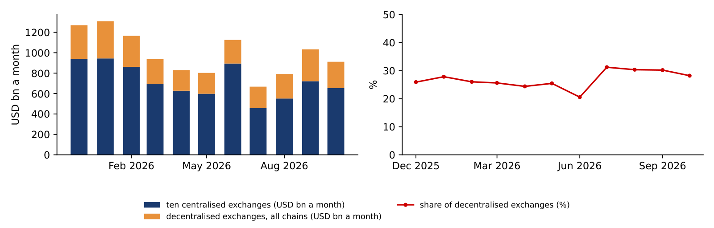
Slightly below: IBIT is at 172.8 and Bitcoin at 174.5, about 1% lower after 674 common trading days. The drift of ln(IBIT/Bitcoin), the slope of a linear trend in years, is −0.24% a year: the cost of holding Bitcoin through the fund. The fund holds the coins, so the two lines overlap, but not exactly; skipping weekends does not lift the ETF above Bitcoin, because both are compared on the same trading days.
A spot exchange-traded fund (spot ETF) is a fund listed on a stock exchange that holds the asset itself, here bitcoins, rather than futures contracts on it. On 10 January 2024 the US Securities and Exchange Commission (SEC) approved 11 spot Bitcoin ETFs (SEC, 2024).
The chart compares the price of Bitcoin with the share price of the ETF IBIT (iShares Bitcoin Trust), both set to 100 on 11 January 2024. The two lines overlap, which means the fund tracks the coin closely. The ETF is an off-chain application of an on-chain asset: pension funds and other investors that can hold only regulated securities can now hold Bitcoin through one.
In brief
Section summary
Market value, shares and the HHI describe a market dominated by Bitcoin, with an effective number of coins below two in the selected basket. Stablecoin supply is concentrated in two issuers, TVL mixes deposits with prices, and an index of today's coins overstates past returns. This answers the third question: the market is large, about 2 trillion USD in the five selected coins, and concentrated.
The section reads four daily on-chain series for Bitcoin and Ethereum, transactions, fees, hash rate and market value, and asks whether the market value follows the activity on the network.
It falls: from 92.37 USD with daily values to 28.75 USD (7 days), 19.81 USD (30 days) and 11.32 USD (90 days). A longer mean averages the peak days with calmer days, so the reported peak depends on the smoothing; the Ethereum peak falls from 37.88 to 19.39 USD. A quoted peak is only comparable with another peak smoothed in the same way.
The chart has four panels, each a daily series from November 2014 to 8 October 2025, from the Blockchain Research Center (BRC), available in the course repository. Bitcoin is in orange and Ethereum in purple. The top-left panel counts transactions per day and the top-right panel shows the average fee per transaction in USD, both as 30-day means; the bottom-left panel shows the Bitcoin hash rate in EH/s, and the bottom-right panel the market value in billions of USD.
All vertical axes are on log scales, where each step up multiplies the value by ten. This makes series that grew by factors of a thousand readable over the whole period; the section on log scales explains the reasoning.
In brief
Usage. Bitcoin recorded 93,112 transactions a day in January 2015 and 488,729 a day in September–October 2025 (30-day mean). Ethereum recorded 1.63 million a day, 3.3 times as many as Bitcoin. One possible reason is that smart contracts generate many small transactions, for example in trading and lending applications.
Fees. The average fee per transaction rises when the network is congested, because users bid for limited space in each block. The peaks were 19.81 USD for Bitcoin in January 2018 and 24.79 USD for Ethereum in November 2021. In October 2025 the averages were 0.27 USD for Bitcoin and 0.17 USD for Ethereum. For Ethereum, a possible explanation of the decline is that activity moved to layer-2 networks; the chart alone does not identify the cause.
In brief
Security. The Bitcoin hash rate rose from 0.30 to 1,079 EH/s, about 3,600 times. The cost of an attack, which requires a large share of this computing power, rose as well, but not in proportion: mining hardware became more efficient and energy prices changed. Value. On 8 October 2025 Bitcoin's market value was 2,442 billion USD and Ethereum's 620 billion.
In brief
The fees panel showed that fees peak in some periods and fall in others. One explanation is congestion: a block can hold only a limited amount of data, and when more users want their transactions included, they offer higher fees to be served first. The chart tests this on monthly means: the horizontal axis is the mean size of a Bitcoin block, in thousands of bytes, and the vertical axis the average fee per transaction, on a log scale. Each of the 132 points is a month, coloured by year.
The points slope upward. The correlation of the logarithm of the fee with the logarithm of the block size is 0.65, and with the logarithm of transactions per day 0.63. In the quarter of months with the fullest blocks, at least 813 thousand bytes, the median fee was 1.88 USD; in the quarter with the emptiest blocks, at most 664 thousand bytes, it was 0.32 USD. December 2017, with blocks of 968 thousand bytes and an average fee of 16.63 USD, is the clearest case.
The chart shows an association of monthly averages, not a demand curve. Block size measures how much space was used, not how much users wanted; fees also depend on the price of Bitcoin, because they are quoted in USD, and on changes in the way transactions are written. The direction is nevertheless the one that the limited supply of block space predicts.
In brief
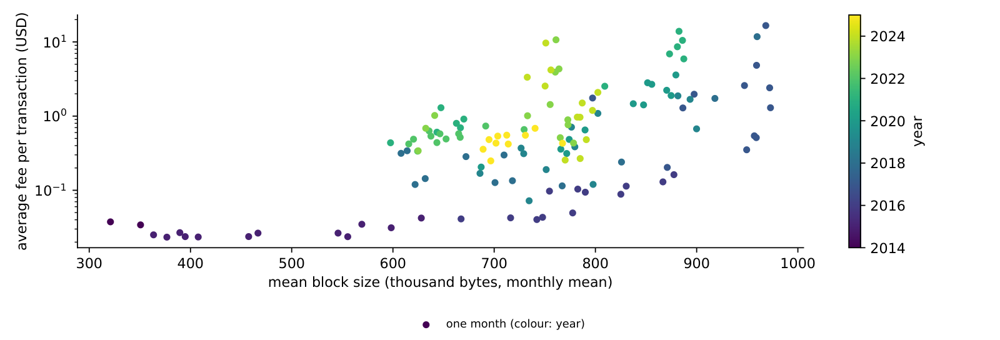
No. With the sample ending in October 2016 the slope is 0.95; it is 2.35 to October 2018, 3.28 to October 2021 and 3.59 to October 2025. The slope describes the association of two trending series over a given period; it is not a stable elasticity, and it is near the slope of 2 of Metcalfe's law only for samples ending in late 2017 or in 2018. Lecture 2 tests the relation formally.
The scatter plot puts the monthly mean of Bitcoin transactions per day on the horizontal axis and the monthly mean market value on the vertical axis, for 132 months; both axes are on log scales and the colour shows the year. On log axes, the correlation of the logarithms measures how closely the two series move together in percentage terms; it is 0.76.
The slope of a straight line fitted to the log values is 3.6. A slope on log-log axes is an elasticity: 1% more transactions goes with about 3.6% more market value. Network-value theories based on Metcalfe's law, which states that the value of a network grows with the square of the number of its users, predict a slope of 2.
The cloud of points is wide, however. In 2021–2025, the yellow and green points, the market value moved up and down without a matching change in activity. Two series that both trend upward can also look related without a direct link between them; Lecture 2 examines this problem.
In brief
Section summary
On-chain series show strong growth in usage, security and value, with fees that follow congestion. The link between activity and market value is positive but loose, and a correlation between two trending series is not evidence that one drives the other. This answers the fourth question: the chain is used more and more, and its value follows its use only loosely.
Crypto series grow by factors of hundreds or thousands, so the usual linear charts and percentage changes become hard to read. The section introduces the log scale and the log return, computes growth rates from two dates and from a trend regression, and tests the fitted trend on the year after the end of the sample.
On a linear axis a series that grows by a factor of 1,000 shows its early years as a flat line near zero. On a log scale, equal vertical distances mean equal ratios: the step from 1 to 10 has the same height as the step from 100 to 1,000, because both are a tenfold rise. A series that grows at a constant rate is therefore a straight line, and a change in its slope is a change in the growth rate.
The matching measure of change is the log return between two dates,
Log returns add up over time: the log return of a year is the sum of its daily log returns. For small changes, \(r\) is close to the percentage change; for example, a rise from 100 to 101 gives \(r = \ln 1.01 \approx 0.00995\), close to 1%. The practical rule is to plot levels on a log scale and to analyse log returns, which Lecture 2 does.
In brief
The chart draws the same series twice: Bitcoin's market value, in monthly means from November 2014 to October 2025 (October covers 1–8 October). The left panel uses a linear vertical axis, the right panel a log scale.
On the linear axis the first years almost vanish. January 2015, with a market value of 3.4 billion USD, is 0.14% of the October 2025 value of 2,421 billion USD; 54% of the months lie below a tenth of that value and look like a flat line near zero. The chart suggests that nothing happened before 2017, although the value grew about seventyfold between 2015 and the end of 2017.
On the log scale the dotted lines at 10, 100 and 1,000 billion USD are equally spaced, because each is ten times the previous one. Growth and falls of the same proportion now have the same height, wherever they happen. The fall from 256 billion USD in December 2017 to 65 billion in December 2018, −75%, is as visible as the booms of later years, while on the linear axis it is a small wiggle.
In brief
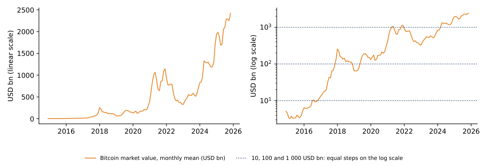
Take three monthly means of Bitcoin's market value: 256.1 billion USD in December 2017, 64.8 billion in December 2018 and 403.1 billion in December 2020. The simple return of the first year is \(64.8/256.1 - 1 = -74.7\%\) and that of the next two years \(403.1/64.8 - 1 = +522.2\%\). Their sum, \(+447.5\%\), suggests a large gain, but the change from December 2017 to December 2020 is only \(403.1/256.1 - 1 = +57.4\%\). Simple returns do not add up over time.
Log returns do. Using formula (1.4), the first log return is \(\ln(64.8/256.1) = -1.375\) and the second \(\ln(403.1/64.8) = +1.828\). Their sum, \(+0.454\), equals \(\ln(403.1/256.1)\), the log return of the whole period, because the logarithm of a product is the sum of the logarithms. To return to a percentage change, take \(e^{0.454} - 1 = +57.4\%\), the same as the direct computation.
The rule follows: add log returns over time, average them, and convert to a percentage change only at the end. A fall of 74.7% followed by a rise of 522.2% is not a gain of 447.5%.
In brief
The return of a crypto-asset is computed with the same formula as the return of a share: the log return of day \(t\) is \(r_t = \ln(P_t / P_{t-1})\), with \(P_t\) the close of day \(t\). What differs is everything around the formula, and the table compares Bitcoin with the S&P 500.
Crypto trades every day and every hour, so a year holds 365 daily returns; a stock exchange opens on about 252 days. The close of a stock is a market event, the closing auction of the exchange, while the close of Bitcoin is a convention of the data vendor, usually midnight UTC. Of the 3,182 daily Bitcoin returns of 2018–2026, 908 fall on a Saturday or a Sunday; the S&P 500 has none, and its Monday return covers three days. Bitcoin pays no income, so its return is the price change alone; Ether pays staking rewards to validators, and shares pay dividends, which enter only adjusted prices. Finally, stock exchanges halt trading after large falls, and crypto markets do not.
Two consequences follow. A daily return of Bitcoin and one of the S&P 500 do not cover the same hours, which is why the correlation of Section 2 depends on the closing hour. And a year holds a different number of returns for the two assets, so annualisation differs.
In brief
| Crypto (Bitcoin) | Stocks (S&P 500) | |
|---|---|---|
| Trading | every day, 24 hours: 365 daily returns a year | exchange days and hours: about 252 daily returns a year |
| Daily close | a convention of the data vendor, usually midnight UTC | the closing auction of the exchange |
| Weekends | 908 of the 3 182 daily returns of 2018–2026 | none: the return of Monday covers three days |
| Income | none for Bitcoin; staking rewards for Ether | dividends, included only in adjusted prices |
| Trading halts | none | circuit breakers stop trading after large falls |
Volatility is the standard deviation \(s\) of the daily log returns: the typical size of a daily move. To compare assets and horizons it is expressed per year. With \(A\) returns in a year, the annual volatility is \(\sigma_a = s\sqrt{A}\) and the annual mean return is \(\mu_a = \bar{r}A\). The mean grows with time and the volatility with the square root of time; the square root rests on the assumption that daily returns are uncorrelated, so that their variances add.
From 1 January 2018 to 18 September 2026, Bitcoin has \(s = 3.355\%\) a day, which gives 64.1% a year with \(A = 365\), and a mean log return of 20.4% a year. The S&P 500 has \(s = 1.210\%\) a day, 19.2% a year with \(A = 252\), and a mean of 12.0% a year. Bitcoin is 3.3 times as volatile. Annualised by mistake with 252 days, Bitcoin would show 53.3%, which is 17% too low: each asset must be annualised with its own calendar.
The same rule gives other horizons: for Bitcoin, 8.9% a week and 18.4% a month. Lecture 2 studies the distribution of these returns and asks whether volatility is constant; it is not.
In brief
The compound annual growth rate (CAGR) between two dates \(T\) years apart is the constant annual rate that turns the starting value into the final value:
For Bitcoin transactions per day, in monthly means, \(X_{\text{start}} = 93{,}112\) in January 2015 and \(X_{\text{end}} = 506{,}379\) in September 2025, so \(T = 10.67\) years. The ratio is 5.44 and its logarithm 1.694. Dividing by \(T\) gives the average log growth per year, 0.159, and \(g = e^{0.159} - 1 = 17.2\%\) a year. The calculation through logarithms gives the same result as formula (1.5), because \((X_{\text{end}}/X_{\text{start}})^{1/T} = e^{\ln(X_{\text{end}}/X_{\text{start}})/T}\).
For the market value of Bitcoin in the same months, 3.4 and 2,251 billion USD, the ratio is 659 and \(g = 659^{1/10.67} - 1 = 83.8\%\) a year. Value grew much faster than usage.
A CAGR uses only the first and the last observation, so it depends on the two dates chosen: starting at a peak or at a trough changes the result. The next slide uses every month.
In brief
A trend regression uses all observations. The logarithm of the series is regressed on time, measured in years:
The slope \(g\) is the continuous growth rate, and \(e^{g} - 1\) the corresponding annual growth rate. The standard error (SE) of \(\hat g\) is computed with the Newey–West method, which allows the errors \(u_t\) to be correlated over time (here with 12 lags); ordinary standard errors would be too small for series like these. The \(R^2\) is the share of the variance of \(\ln X_t\) explained by the trend.
The table reports the estimates for Bitcoin, monthly, 2014–2025. For transactions per day \(\hat g = 0.104\) (SE 0.021, \(R^2 = 0.62\)), an annual growth of 10.9%. For market value \(\hat g = 0.586\) (SE 0.055, \(R^2 = 0.88\)), an annual growth of 79.7%. They differ from the CAGRs of the worked example, 17.2% and 83.8%, which use only the two end points.
In brief
| Bitcoin, monthly, 2014–2025 | \(\hat g\) | SE | \(R^2\) | \(e^{\hat g} - 1\) |
|---|---|---|---|---|
| transactions per day | \(0.104\) | \(0.021\) | \(0.62\) | \(10.9\%\) |
| market value | \(0.586\) | \(0.055\) | \(0.88\) | \(79.7\%\) |
Whether value really grew faster than usage is tested directly. Regressing \(\ln(M_t/n_t)\), the log of market value \(M_t\) divided by transactions per day \(n_t\), on time estimates the difference of the two growth rates, \(g_M - g_n\): it is 0.482 (SE 0.052), so \(z = 9.3\), far beyond the usual critical values. The residuals, however, have a first-order autoregressive, AR(1), coefficient of 0.96: a deviation from the trend in one month is almost fully carried into the next, so deviations last for years. The test is then only as reliable as the assumption that a straight trend describes the series, and the result depends on the sample period.
In brief
It falls from 79.7% to 29.6% a year (ĝ = 0.260 instead of 0.586). The regression uses every month of the sample, but the sample still decides the result: the years of fastest growth, 2015–2017, drop out. Higher market values in the later years do not mean faster growth: the slope measures the change of the log level, not the level. Transactions grow 17.1% a year from November 2020, against 10.9% from November 2014.
The chart shows the monthly means of Bitcoin transactions per day and of the market value (in millions of USD), with the fitted log-linear trends as dashed lines. On the log scale each trend is a straight line, with slopes corresponding to 10.9% a year for transactions and 79.7% a year for market value.
The transactions stay close to their trend. The market value moves around its trend in long waves: it rises well above the trend in 2017–2018 and in 2021–2022 and falls back below it afterwards. These long waves are the persistent residuals measured by the AR(1) coefficient of 0.96.
In brief
For 16 of the 33 origins (48%), every time below the band; a valid 95% band would miss about 5% of the time. The band is wide, from 0.26 to 3.8 times the forecast at the October 2025 origin, but it assumes independent residuals; the residuals have an AR(1) coefficient of 0.97, so deviations from the trend last for years and the band is far too narrow beyond a few months. At the October 2025 origin, the October 2026 value, 1,670 USD bn, lies just below the band, which starts at 1,770 USD bn.
A trend fitted to past data can be extended into the future, which gives a forecast. The chart extends the trend of the Bitcoin market value, 79.7% a year, from November 2025 to October 2026 (solid blue line) with a naive 95% band, and compares it with the market value in those months (red points). The market value is reconstructed as the EODHD price times an approximate supply, computed from the protocol rule at the block rate observed since 2009 (Appendix), because no observed monthly series is available for this period.
The table gives the comparison. The trend forecast rises from 3,918 billion USD in November 2025 to 6,706 billion in October 2026, while the reconstructed value falls from 1,920 to 1,670 billion (October 2026 covers 1–23 October). The ratio of the reconstructed value to the forecast drops from 0.49 to 0.25: one year after the end of the sample, the market value is a quarter of what the trend predicted, and it ends just below the naive 95% band.
The band is too narrow because it assumes that the residuals are independent and identically distributed (iid). The residuals are close to a random walk, with an AR(1) coefficient of 0.97, so the uncertainty grows with the horizon much faster than the iid band allows beyond a few months. A trend describes the past growth of a series; it is not a forecast of a price.
In brief
| Bitcoin market value, USD bn | Nov 2025 | Feb 2026 | Jun 2026 | Sep 2026 | Oct 2026\(^{*}\) |
|---|---|---|---|---|---|
| trend forecast (79.7% a year) | 3 918 | 4 537 | 5 516 | 6 387 | 6 706 |
| reconstructed (EODHD price \(\times\) approx. supply) | 1 920 | 1 376 | 1 263 | 1 617 | 1 670 |
| reconstructed / forecast | \(0.49\) | \(0.30\) | \(0.23\) | \(0.25\) | \(0.25\) |
Section summary
Log scales turn constant growth into straight lines, and log returns add up over time. A CAGR depends on its two end dates, while a log-linear trend uses every observation but rests on the assumption of a stable trend; the forecast one year later shows how strongly persistent residuals limit such a model. This answers the fifth question: growth is read on a log scale, and a trend that fits the past does not forecast a price.
The five answers, in order. A public blockchain records every transfer, fee and block, but not the owners behind the addresses or the trades inside exchanges; its security and its supply can be measured, with about 1,080 EH/s for Bitcoin in October 2025 from formula (1.1) and a supply capped at 21 million by the rule (1.2). The data are public and free, and they must be checked before use: series can end early or have gaps, one asset has several prices, and the daily close is a convention. The market is large and concentrated: the HHI of the five selected coins is 0.71, and two issuers hold 85% of all stablecoins.
The chain is used: Bitcoin carries about 489 thousand transactions a day and Ethereum 3.3 times more. Value and use are correlated, 0.76 in logs, but in 2021–2025 the value moved without more activity. Over 2014–2025 the log-linear trends give Bitcoin usage a growth of 10.9% a year and market value 79.7% a year, but one year later the value is a quarter of the trend.
Together they answer the lecture question. A manager can read use, fees, security and concentration directly from public data; owners, off-chain trades and future prices are not in them. Levels and trends describe the past; inference and forecasts need returns, the subject of Lecture 2.
In brief
The four exercises use the numbers of the lecture. Each asks for an interpretation in a few sentences: what a measure shows, what it does not show, and which additional data would answer the question.
In brief
The Appendix holds optional material for self-study. It contains worked examples on mining, index construction and TVL, checks of the protocol formulas on the data, and background on the history of Bitcoin and Ethereum.
The adjustment rule can be read backwards. Every 2,016 blocks the protocol sets \(D_{\text{new}} = D_{\text{old}} \times 20\,160/m\), where \(m\) is the number of minutes the last 2,016 blocks took and 20,160 minutes is what they would take at exactly 10 minutes each. Knowing the two difficulties is therefore enough to recover how long the previous epoch lasted.
The last adjustment in the data moved the difficulty from \(D_{\text{old}} = 1.4234 \times 10^{14}\), in force from 19 September 2025, to \(D_{\text{new}} = 1.5084 \times 10^{14}\), from 2 October 2025. The first step is the factor \(D_{\text{new}}/D_{\text{old}} = 1.5084/1.4234 = 1.0597\), a rise of 5.97%. The second step solves the rule for the minutes: \(m = 20{,}160/1.0597 = 19{,}024\) minutes, or 13.21 days instead of 14. The third step divides by the number of blocks: \(19{,}024/2{,}016 = 9.44\) minutes between blocks.
Daily mean block times give 9.52 minutes for 19 September to 1 October 2025. The small difference comes from the calendar: daily means cover whole days, while the epoch starts and ends inside a day. After the adjustment, the same hash rate needs 10 minutes per block again; if the hash rate keeps growing, the next epoch is early again.
In brief
The computation behind the chart can be done by hand for one day, 8 October 2025. The first step counts the blocks: the mean block time was 9.73 minutes, so the network produced \(1{,}440/9.73 = 148.0\) blocks. The second step values the subsidy: \(148.0 \times 3.125 = 462.5\) BTC, which at the close of 123,355 USD is 57.1 million USD.
The third step values the fees: 427,326 transactions at an average fee of 0.350 USD give 0.150 million USD. The fourth step gives the fee share, \(0.150/(57.1 + 0.150) = 0.26\%\). On this day almost all of the miners' income was new coins.
At the next halving the subsidy falls to 1.5625 BTC per block. With the same price and the same fees, revenue would fall from 57.2 to 28.7 million USD a day, and the fee share would only double, to 0.52%. Fees at today's level are far from replacing the subsidy; either the price or the demand for block space has to rise for the security budget to stay where it is.
In brief
Each block is won by a miner with a probability equal to its share of the hash rate, independently of earlier blocks. With 144 blocks a day and a share \(s = 1\%\), the number of blocks won in a day is approximately Poisson with mean \(\lambda = 144\,s = 1.44\). The probability of winning nothing is \(e^{-1.44} = 0.237\), and the probability of winning three or more is 0.176. On almost one day in four such a miner earns nothing, while its electricity costs continue. This variance of revenue is the reason for mining pools, in which miners combine their hash rate and share a smoother payout. The same model explains why exchanges wait for several confirmations (later blocks) before accepting a deposit: the chance that an attacker with a share \(q < 0.5\) rewrites the chain falls geometrically with the number of blocks.
In brief
The chart compares the hash rate reported in the data with the hash rate implied by formula (1.1) from the published difficulty, as monthly means from November 2014 to October 2025. The ratio of reported to implied hash rate has a mean of 1.029, a standard deviation of 0.042 and a range of 0.83 to 1.14. The reported series is itself an estimate based on block times, and the 3% gap reflects blocks arriving slightly faster than every 600 seconds.
In brief
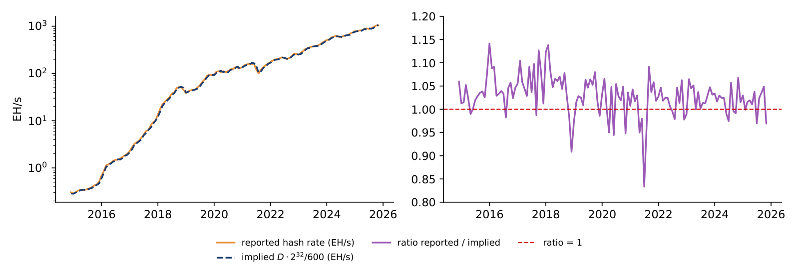
At exactly 144 blocks a day, the supply rule gives 19,992,600 BTC on 24 October 2026. The actual supply on that date, from EODHD, was 20,102,728 BTC, 110,128 BTC or 0.55% more. Since height 840,000 the subsidy is 3.125 BTC, so the actual supply implies a block height of \(840{,}000 + (20{,}102{,}728 - 19{,}687{,}500)/3.125 = 972{,}873\). Over the 6,503 days since the first block this is 149.6 blocks a day, 3.9% faster than the target, because the difficulty adjusts only every 2,016 blocks and blocks come early while the hash rate grows. At 144 blocks a day the next halving, at height 1,050,000, falls around 11 April 2028. The rule is exact in blocks; its path in calendar time is a forecast with a small, one-sided error.
In brief
A value-weighted index of \(k\) coins divides their total market value by a divisor \(D_t\), \(I_t = \sum_{i=1}^{k} P_{i,t}Q_{i,t}/D_t\). When the constituents change at a rebalancing date, the divisor is rescaled by the ratio of the new to the old total market value, so the index does not jump. Trimborn & Härdle (2018) choose the number of coins \(k\) with a rule of the Akaike information criterion (AIC) type, shown in a stylised form on the slide: \(\hat\sigma^2_k\) is the variance of the difference between the return of the \(k\)-coin index and the return of the total market. More coins track the market better but cost more to replicate, and the criterion balances the two.
In brief
Before rebalancing, the index holds coins A and B with market values 800 and 200 billion USD, a divisor of 1 and an index value of 1,000. Coin C, with market value 100, enters on that day. The new divisor is \(1 \times 1{,}100/1{,}000 = 1.1\), and the index stays at \(1{,}100/1.1 = 1{,}000\): a change of constituents is not a return. On the next day the market values are 820, 190 and 110, a total of 1,120, so the index is \(1{,}120/1.1 = 1{,}018.2\), a return of 1.82%. Without the new divisor the index would have shown a false rise of 10% on the rebalancing day.
In brief
The regression relates the monthly log change of TVL to the monthly log change of the Ether price, \(\Delta\ln \mathrm{TVL}_t = a + b\,\Delta\ln P^{\mathrm{ETH}}_t + u_t\), with Newey–West standard errors. The coefficient \(b\) is the elasticity of TVL to the Ether price. Over 80 months the estimate is \(\hat b = 0.79\) (SE 0.066), with \(t = 12.0\), so the association is precisely estimated, and \(R^2 = 0.62\): Ether price changes account statistically for 62% of the variance of monthly TVL changes. Because TVL is the sum of prices times deposited quantities, \(\sum_j P_{j,t}N_{j,t}\), activity is better measured with quantities at fixed prices, \(\sum_j \bar P_j N_{j,t}\), with net flows or with fees.
In brief
A lending protocol holds 100 million USD, 60% in Ether and 40% in stablecoins. Ether rises by 50% and nobody deposits or withdraws. TVL becomes \(60 \times 1.5 + 40 = 130\) million USD, a rise of 30%, although activity did not change: TVL at fixed prices stays at 100. In this accounting example the elasticity of TVL to the Ether price is 0.6, the Ether share of the deposits. The market-wide estimate \(\hat b = 0.79\) is a different quantity: an association between monthly percentage changes of TVL and of the Ether price over 2020–2026, which also reflects flows that move with Ether and other token prices.
In brief
The chart simulates the supply of bitcoin with the protocol rule and exactly 144 blocks a day; the dotted green lines mark the four halvings on this simulated calendar, at the end of 2012, 2016, 2020 and 2024. The actual halvings came earlier, in November 2012, July 2016, May 2020 and April 2024, because blocks arrived faster than every 10 minutes. The annual supply growth falls with each halving: 33.3% in 2013, 9.0% in 2017, 3.7% in 2021, 1.7% in 2025, 0.83% in 2026 and 0.4% in 2032, and 99% of the cap is reached in 2035. The simulation gives 19.98 million BTC on 18 September 2026, against an actual supply of 20.09 million.
In brief
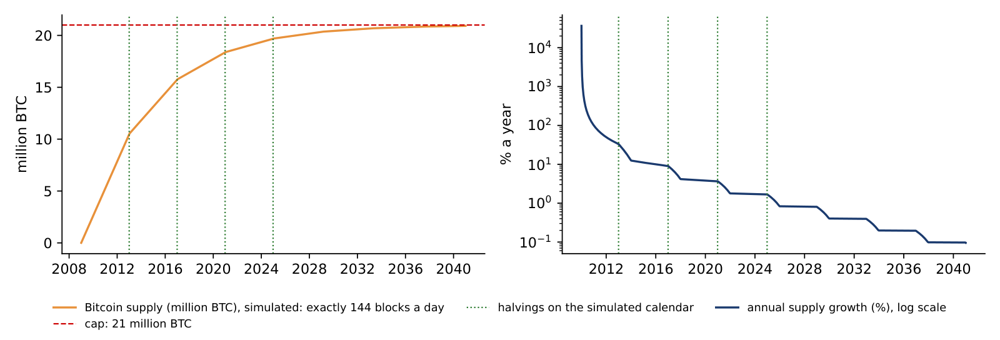
The chart computes the monthly HHI of 11 coins from the BRC data, 2014–2025. The HHI reached its maximum, 0.868, in December 2015, when Bitcoin dominated almost alone, and its minimum, 0.306, in January 2018, with a Bitcoin share of 47.1% and an effective number of 3.27 coins. In September 2025 the HHI was 0.581, with a Bitcoin share of 73.5% and an effective number of 1.72: after each boom in other coins, the market concentrated again in Bitcoin.
In brief
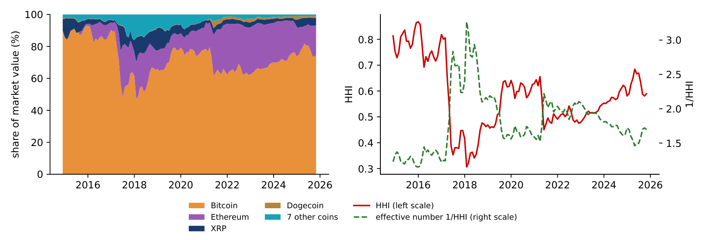
The chart shows the TVL of the ten largest blockchains on 18 September 2026. Ethereum holds 49.8 billion USD, 57% of the total of 88 billion. Base and Arbitrum are layer-2 networks, which offer cheaper transactions and settle on Ethereum. One platform dominates, while applications spread to cheaper chains.
In brief
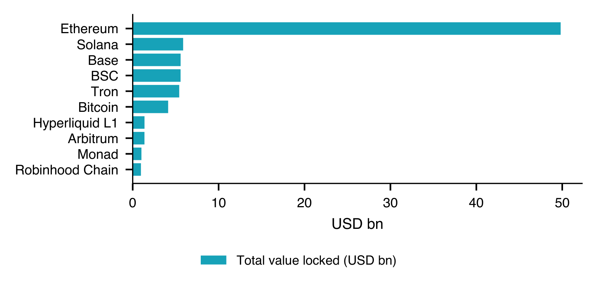